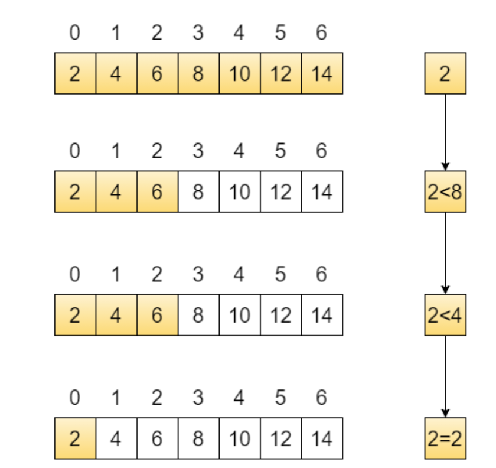

TECNM QRO Programación Ing. Eléctrica 2026 Parte 4
4 Arreglos
Un arreglo es un grupo de de valores asociados con un índice que son del mismo tipo y tienen el mismo nombre. Se útilizan para representar vectores, matrices o tensores.
Un arreglo unidimensional se puede declarar de la siguiente manera:
Puede definirse también con constantes.
/*Arreglo sin inicializar de tamaño definido por una constante simbólica*/
#define T 10
/*Declaración del arreglo*/
int c[10]; 4 Arreglos
| Posición | Valor |
|---|---|
| c[0] | 17 |
| c[1] | 42 |
| c[2] | 8 |
| c[3] | 55 |
| c[4] | 23 |
| c[5] | 91 |
| c[6] | 34 |
| c[7] | 76 |
| c[8] | 12 |
| c[9] | 68 |
4 Arreglos
Inicializando e imprimiendo un arreglo de enteros tamaño 10.
4 Arreglos
Inicializando e imprimiendo un arreglo de enteros con ceros.
4 Arreglos
Inicializando e imprimiendo un arreglo con enteros aleatorios del 1 al 10
Ejercicio:
Escribir un programa en C que genere una representación en grafica de barras con asteriscos de los valores de un arreglo de enteros de tamaño T.
Por ejemplo: Si el arrego a[5]={0,4,3,5,1}, imprimir su representación en grafica de barras:
ix
--
0:
1:****
2:***
3:*****
4:*
4 Algoritmos de ordenamiento.
Una de las aplicaciónes mas importantes en ciencias de la computación, es ordenamiento de datos. El algoritmo mas sencillo de todos es el Algoritmo de la burbuja.
#include<stdio.h>
#include<stdlib.h>
#define T 10 /*Constante simbllica, se recomienda que sea en mayusculas para distinguirlo en el programa*/
int main(){
int a[T] = {1,9,2,4,5,3,45,5,6,3};
int ix, jx, planchadas, aux;
printf("Arreglo antes de ordenar: ");
ix = 0;
while(ix<T){
printf("%d ", a[ix]);
ix = ix+1;
}
planchadas = 0;
while(planchadas<=T-1){
ix = 0;
while(ix<=T-2){
if(a[ix]<a[ix+1]){
aux = a[ix];
a[ix] = a[ix+1];
a[ix+1]=aux;
}
ix = ix+1;
}
planchadas = planchadas + 1;
}
printf("\n Arreglo despues de ordenar:");
ix = 0;
while(ix<T){
printf("%d ", a[ix]);
ix = ix+1;
}
}4 Algoritmos de ordenamiento.
Que hace el siguiente algoritmo?
#include <stdio.h>
int main() {
/*Ordena de manera ascendente */
/*arreglo desordenado de enteros*/
int arr[] = {5, 3, 8, 1, 4};
/*especificar manualmente el tamaño del arreglo*/
int n = 5;
int i, j, aux;
i = 1;
while (i < n) {
aux = arr[i];
j = i - 1;
while (j >= 0 && arr[j] > aux) {
arr[j + 1] = arr[j];
j = j - 1;
}
arr[j + 1] = aux;
i = i + 1;
}
i = 0;
while (i < n) {
printf("%d ", arr[i]);
i = i + 1;
}
printf("\n");
return 0;
}4 Algoritmos de ordenamiento.
Ordenamiento por inserción.
#include <stdio.h>
int main() {
/*Ordena de manera ascendente */
/*arreglo desordenado de enteros*/
int arr[] = {5, 3, 8, 1, 4};
/*especificar manualmente el tamaño del arreglo*/
int n = 5;
/*i,j son indices que recorren el arreglo*/
/* aux tendra la copia de un valor del arreglo a acomodar*/
int i, j, aux;
/*se asume que el lugar i=0 ya esta ordenado*/
/*por eso i recorre de 1 a n-1*/
i = 1;
while (i < n) {
aux = arr[i];
j = i - 1;
/*Recorre el arreglo mientras j>=0 y aux no este ordenado (arr[j] > aux*/
while (j >= 0 && arr[j] > aux) {
arr[j + 1] = arr[j]; /*intercambiar a la derecha arr[j] en arr[j+1] */
j = j - 1;
}
arr[j + 1] = aux;
i = i + 1;
}
/* imprimir resultado */
i = 0;
while (i < n) {
printf("%d ", arr[i]);
i = i + 1;
}
printf("\n");
return 0;
}Busqueda binaria.
Cuando los arreglos estan ordenados, se requieren algoritmos eficientes para buscar valores.
Un algoritmo eficiente es la Búsqueda Binaria

Busqueda binaria
Criba de Eratostenes

Busqueda binaria
Arreglos bidimensionales
En C se declaran como
Arreglo bidimensional
Ejercicio:
Escribir un programa en C, que pida al usuario la dimension de una matriz de enteros la inicialice con valores aleatorios del 1 al 10 y la imprima en consola.
Escribir un programa en C que pida al usuario las dimensiones de dos matrices,
Arreglo bidimensional
4 Ejercicio con arreglo unidimensional
Ejercicio:
Programar un histograma de frecuencias. Escribir un programa en C que genere N números aleatorios entre 1 y 10 solicitados por el usuario, y genere un histograma de frecuencias en consola.
Por ejemplo si 10 valores generados son a = [1,1,1,2,2,3,3,3,3,3]
1:***
2:**
3:****
4:
5:
6:
7:
8:
9:
10:
Ejercicio: Registro de temperaturas semanales
Se desea crear un programa en C que registre las temperaturas mínimas y máximas durante una semana (7 días). Para ello, se utilizará un arreglo bidimensional de 7 filas y 2 columnas, donde:
La columna 0 guarda la temperatura mínima del día.
La columna 1 guarda la temperatura máxima del día.
Requisitos del programa:
Pedir al usuario que ingrese las temperaturas mínimas y máximas de cada uno de los 7 días.
Mostrar todas las temperatu1ras registradas en formato de tabla.
Calcular y mostrar:
El promedio de temperaturas mínimas de la semana.
El promedio de temperaturas máximas de la semana.
Determinar y mostrar el día (número de 1 a 7) que tuvo la mayor diferencia entre temperatura máxima y mínima.
Arreglo Bidimensional
Ejercicio: Escribir un programa en C que guarde en una matriz 3x3 enteros proporcionados por el usuario
Calcular la suma de la diagonal principal
Objetivo: Reforzar recorrido con índices [i][j], aplicar lógica simple
Arreglos de caracteres
Características de los arreglos de caracteres.
- Se puede utilizar con una literal de cadena para su inicialización.
- su tama~no es del número de caracteres + un caracter nulo
\0.
Los arreglos de caracteres deben declararse lo suficientemente grande para contener las cadenas de caracteres.
Ejercicio. Qué hace el siguiente programa?
#include <stdio.h>
#include <stdlib.h>
#include <time.h>
int main() {
int n;
/* Semilla para generar números aleatorios diferentes cada vez*/
srand(time(NULL));
/* Pedir tamaño del arreglo*/
printf("Ingrese el tamaño del arreglo: ");
scanf("%d", &n);
int i,j;
int arreglo[n];
int conteo[11] = {0}; // conteo[1] a conteo[10]
/* Llenar el arreglo con números aleatorios entre 1 y 10*/
printf("\nValores generados:\n");
i = 0;
while(i<n){
arreglo[i] = rand() % 10 + 1; // número entre 1 y 10
printf("%d ", arreglo[i]);
conteo[arreglo[i]] = conteo[arreglo[i]] + 1;
i=i+1;
}
return 0;
}Ejercicio arreglo bidimensional
Escribir un programa en C que pida al usuario los valores de una matriz bidimensional M[3][3], tipo entero e imprima la matriz en consola.